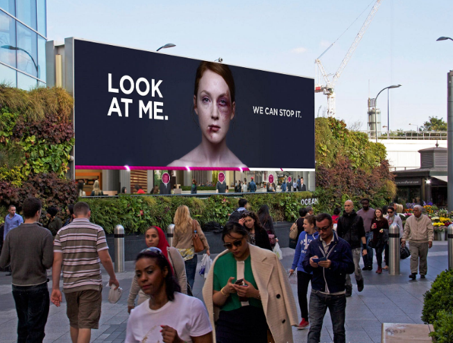

1. Smirnoff and Spotify – The Equaliser
•In 2018, Smirnoff backed a campaign to get more people listening to women. It was based on data from Spotify that showed none of the top 10 most-streamed tracks in 2017 were performed by female artists or bands.
•It created ‘the Smirnoff Equaliser’ – an API that analysed user data to give them a percentage of the number of female and male artists they streamed on Spotify in the previous six months. It then offered an equalised playlist, made up of tracks by an even number of men and women.
•Designed to tackle gender bias in the music industry, and promote the creative talent of both women and men – it was a shrewd partnership by two big name brands.
2. H&M – She’s a lady
•In 2016, H&M created a splash on social media with its stereotype-smashing campaign, She’s A Lady. Encouraging women to be fierce and fearless with their fashion choices rather than typically ‘ladylike’, the campaign was designed to break down gender norms and encourage self-expression.
•The advert was particularly applauded for speaking about fashion in this context, instead of the standard focus on consumerism.

3. Women’s Aid – interactive digital billboards
•Domestic abuse charity Women’s Aid used experiential marketing to make people stop and take notice of the issue in a Masters of Marketing award-winning campaign in 2016.
It put up interactive out-of-home (OOH) ads featuring a picture of a beaten and bruised woman.
•The more people who stopped and looked at the poster, the more quickly the woman’s injuries would disappear.
The campaign results:
•Average time people spent looking at the posters was 349% higher than the previous average measured across the same sites.
•2,500% increase in people stopping to watch for more than 10 seconds.
•PR reach of 326.9m people, with 70 broadcasters, newspapers and online portals covering the campaign.
•Media companies from all quarters of the consumer press – from Mashable and Upworthy to The Telegraph, Time Out and Huffington Post – ran the story.
Coverage in 20 countries, from Australia to Russia, with prime-time bulletins on American news stations NBC, CBS and ABC.
•86.7m impressions on Twitter alone.